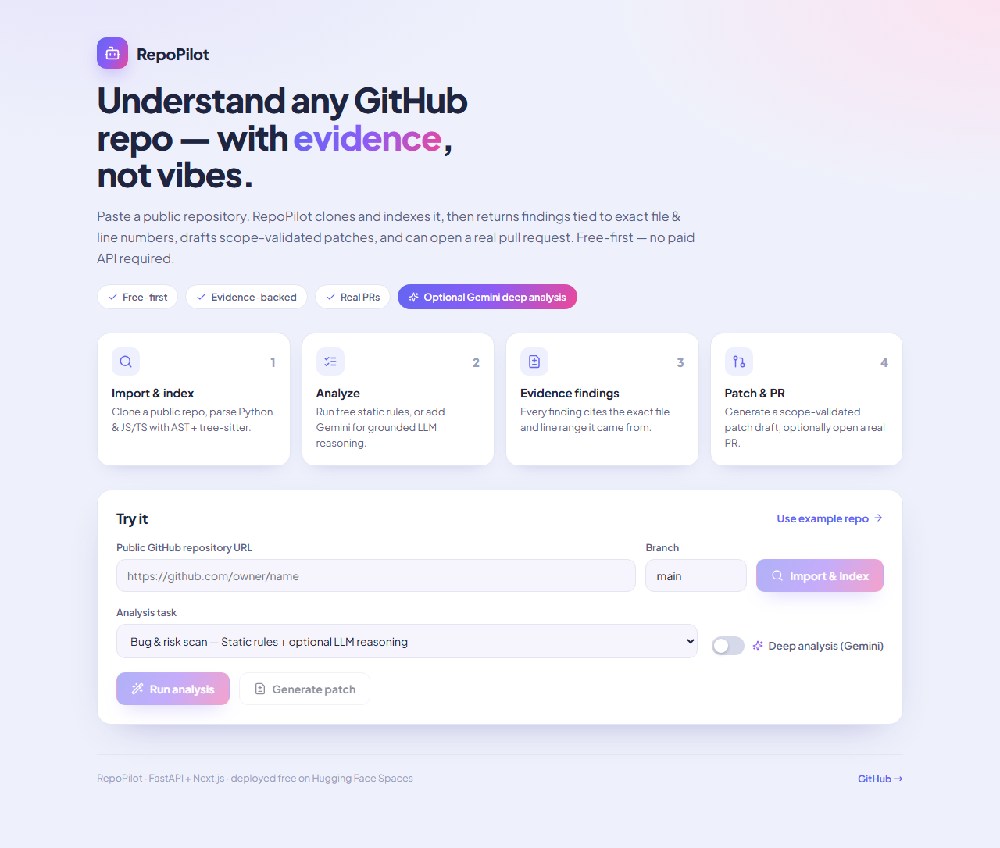

public 저장소 URL 하나면 됩니다. RepoPilot은 코드를 인덱싱하고, 모든 finding에 파일·라인 근거를 붙여 보여주며, scope가 검증된 patch 초안을 만들고, 원하면 실제 GitHub PR까지 엽니다. 유료 API·유료 DB 없이.

AI 코드 분석 도구는 대부분 유료 API에 묶여 있고, 근거 없이 "이게 문제다"라고만 말합니다.
모든 finding은 실제로 가져온 코드의 파일 경로 + 라인을 함께 보여줍니다. retrieved evidence 없이 단정하지 않습니다.
OpenAI·Claude·유료 vector DB·hosted DB·GPU 없이 동작. 기본은 결정론적 정적 분석, deep analysis는 무료 Gemini 키를 직접 넣으면 켜집니다.
URL 입력부터 PR까지, 4단계.
public GitHub URL을 붙여넣으면 clone 후 임시 workspace를 만듭니다.
Python AST와 JS/TS/TSX tree-sitter로 심볼을 추출하고, 관련 코드 chunk를 찾습니다.
정적 rule(secret·bare except·eval 등)과 선택적 LLM 추론이 파일·라인 근거와 함께 결과를 냅니다.
승인된 파일 범위 안에서 patch 초안을 만들고, 토큰을 주면 실제 PR을 엽니다.
모든 주장에 retrieved 코드 근거. "믿어달라" 대신 "여기 봐라".
Python AST + JS/TS/TSX tree-sitter(regex fallback)로 class/function/import 추출.
무료 Gemini 키를 넣으면 같은 evidence 위에서 LLM 추론까지. 키 없으면 정적 분석만.
patch가 승인된 파일 범위를 벗어나지 않는지 검증한 뒤에만 PR로 연결.
설치도, 카드 등록도 없습니다. 브라우저에서 public 저장소 URL만 붙여넣으면 됩니다.